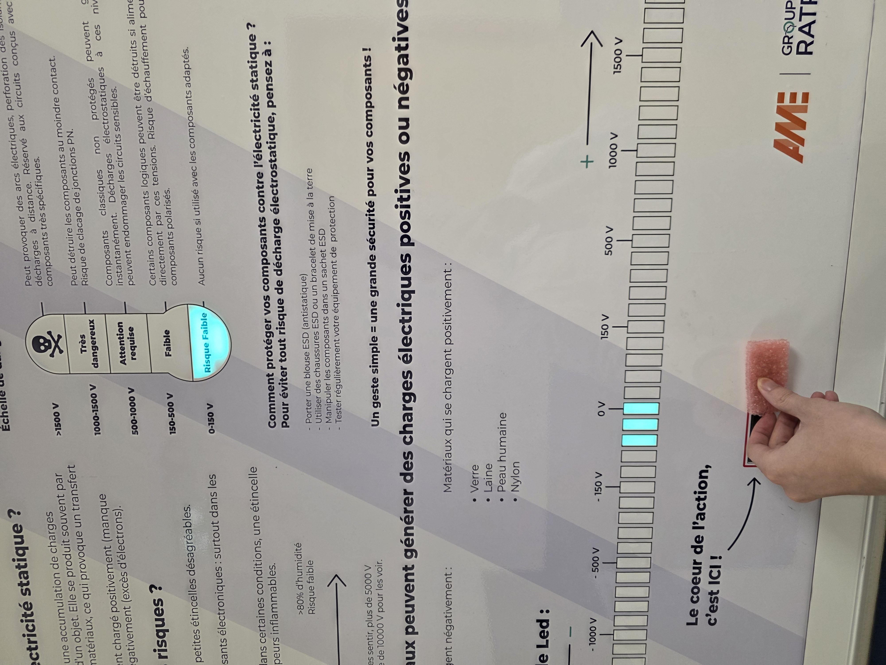
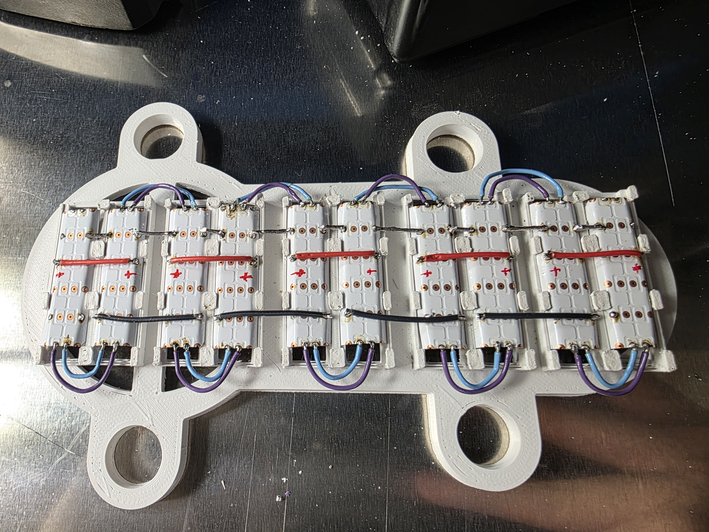
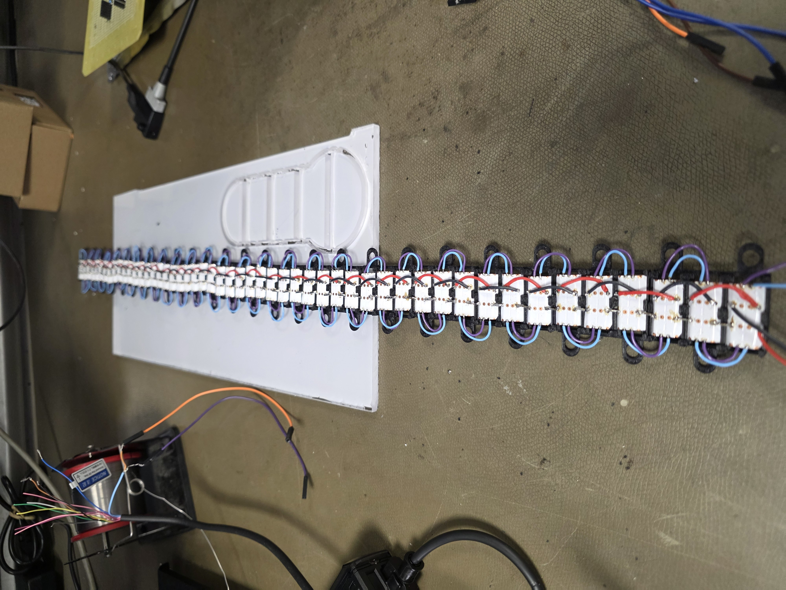
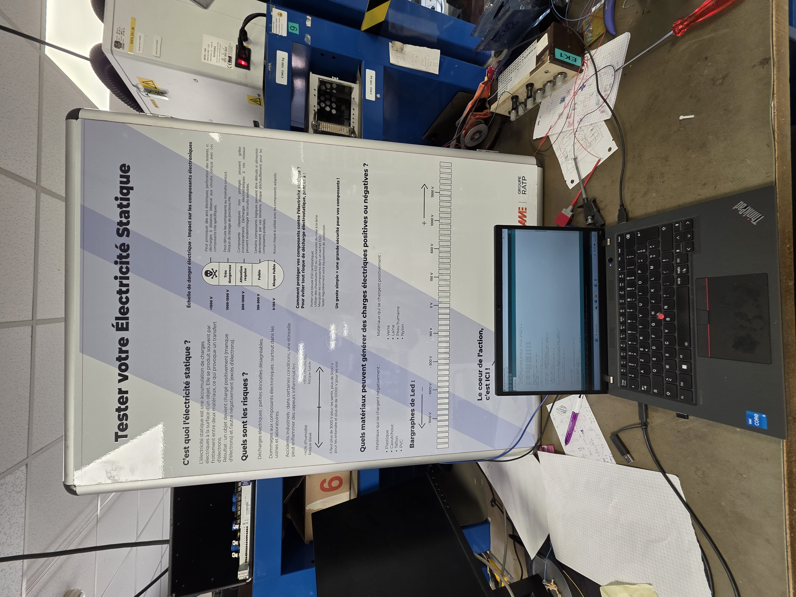
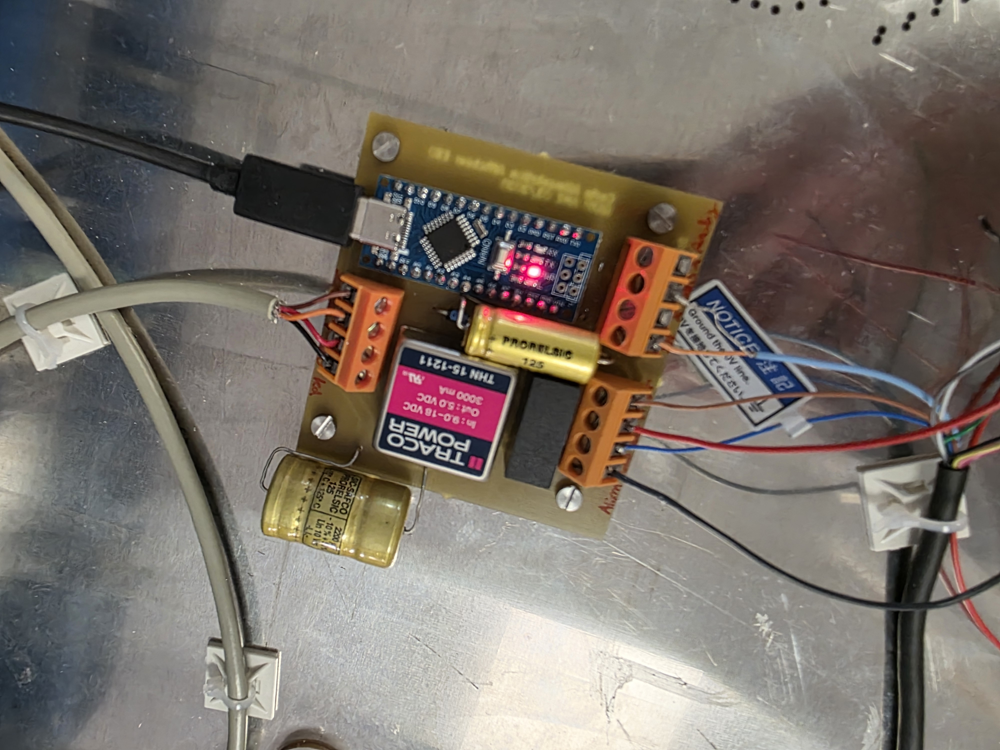
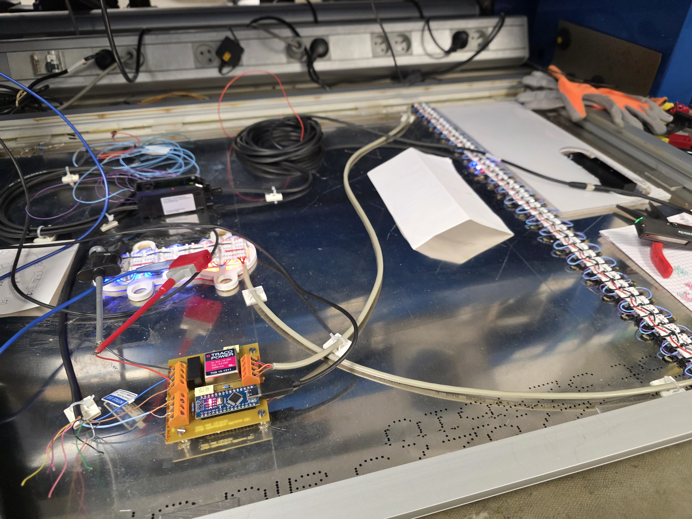

Ce projet majeur de mon stage à la RATP avait pour objectif de concevoir un système de sensibilisation visuel aux risques liés aux décharges électrostatiques (ESD) dans l'atelier de maintenance. J'ai été chargé de développer deux panneaux d'affichage interactifs, capables de mesurer et d'afficher en temps réel la charge statique de différents matériaux (-1000V à +1000V).

Phase de test et calibration : Le panneau est fonctionnel et relié au PC portable, montrant la réactivité du bargraphe à LEDs selon la mesure du capteur.La première étape de réalisation a consisté à concevoir l'intégration mécanique de l'électronique dans le panneau. J'ai modélisé en 3D l'ensemble des pièces sous **FreeCAD**, un logiciel de CAO open-source. J'ai créé les supports des bandes LEDs et les plaques de protection en plexiglass, en utilisant des fonctions booléennes pour concevoir les trous de fixation de manière précise.
Ces modèles ont été exportés au format STEP pour être fabriqués sur une fraiseuse CNC, garantissant une précision micrométrique pour l'alignement des 153 LEDs APA102 du bargraphe et du thermomètre d'état.


Le cœur du système repose sur un microcontrôleur **Arduino Nano** qui fait l'interface entre le capteur industriel et l'affichage. Ma mission a été de lire le signal analogique (0V-5V) renvoyé par l'amplificateur **Keyence SK-1000**.

Résultat final : Le panneau d'affichage interactif assemblé et fonctionnel, illustrant l'intégration de la programmation et du câblage.N'ayant pas de schéma électrique à disposition, j'ai réalisé du **Reverse-Engineering** sur la carte d'alimentation d'un ancien panneau afin de reproduire un circuit fiable pour mon projet. J'ai fabriqué un PCB double-face intégrant une alimentation à découpage pour convertir le 230V secteur en tensions de service.
Le câblage final a été un défi de taille, notamment pour relier les 153 LEDs APA102. J'ai plié les bandes pour gagner de l'espace, étamé chaque pastille et utilisé des gaines thermo-rétractables pour garantir l'isolation et la fiabilité du système.


Lors des tests, j'ai diagnostiqué la casse d'une diode Schottky de l'Arduino, causée par l'appel de courant des 153 LEDs. J'ai résolu ce problème en remplaçant la diode et en mettant en place une alimentation séparée pour les LEDs, sécurisant ainsi le microcontrôleur.
Ce projet complet, de la CAO à l'intégration finale, a validé mes compétences en informatique industrielle, en électronique de puissance et en fabrication mécanique. Il a été très apprécié par l'unité EK1 pour son utilité concrète dans la sensibilisation aux risques ESD.